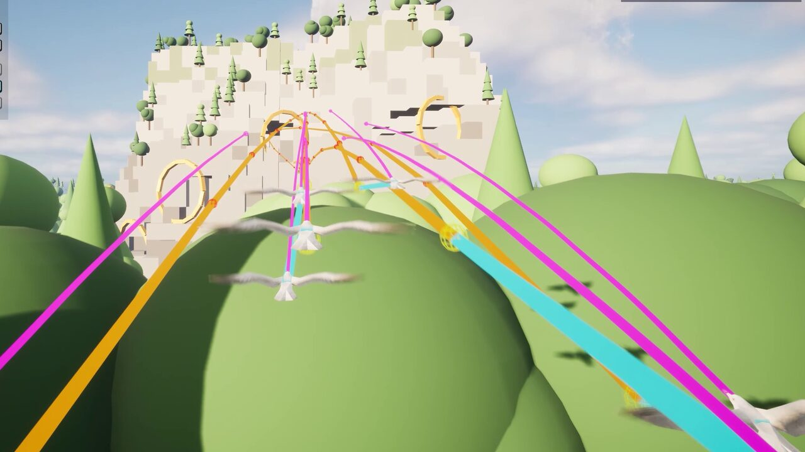
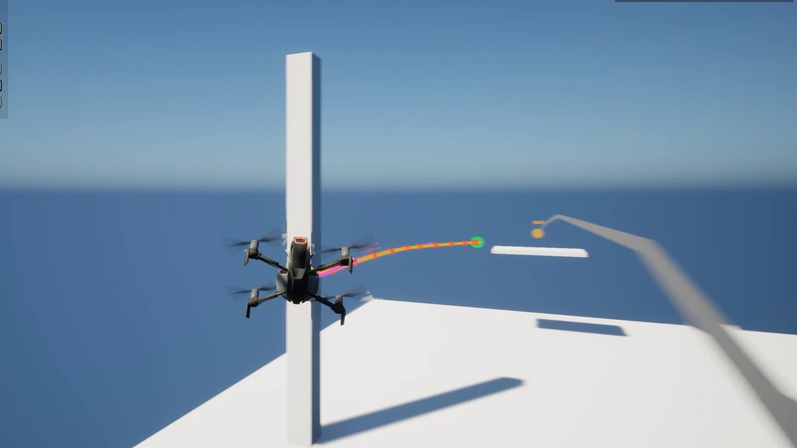

UEDEV / 3D Navigation AI / Open worlds · Updated
v3.6.0 Use case · Open worlds
Open-world 3D navigation for Unreal Engine 5
Most volumetric navigation starts by asking for a bounds volume, and navigation simply ends at its edge. Infinite mode removes the box: navigation streams in around your agents and is discarded behind them, so memory stays flat however far the map runs.
Rated 5.0 out of 5 from3 ratings on Fab- LCM 3D Navigation AI
- Unreal Engine 5.2–5.8
- Bounds volumes needed
- 0
- Built chunk octrees
- GPU
- Streamed demo worlds
- 3
- Unreal Engine
- 5.2–5.8

No bounds volume, no edge
A bounds volume has to contain everywhere an agent may ever fly, and memory scales with that box whether or not anything is happening inside it. In infinite mode, navigation chunks are generated around the agents as they travel and discarded behind them, for the same reason you stream level geometry rather than loading a continent.
For an arena or a level-sized map, finite mode builds once at BeginPlay or bakes to an asset, with the lowest overhead.

Planning beyond what has loaded
Long routes use macro/micro routing: the path solves coarsely across chunks and finely within the chunk the agent is in, so a cross-map flight never pays full-resolution search cost end to end. A persistent long-range graph keeps planning through geometry that has not streamed in yet.
Find Path Detailed tells a complete route from one that stops short of the goal in a streamed world, and the query option Require Complete Path makes a partial route fail instead.

Pre-baked where you want it, streamed everywhere else
Bake the authored parts of a world ahead of time and stream the rest: streamed worlds can use pre-baked chunks, and navigation rebuilds automatically when levels stream in. Moving obstacles are cheap in streamed worlds too.

Chunks built on the GPU, and checked
Each streamed chunk's voxels, octree and links are built on the GPU on D3D12, D3D11 and Vulkan. Each machine's GPU proves its voxels before it builds navigation, and the GPU build checks its own output word by word and rebuilds what it cannot repair. Cost areas (storms, no-fly zones, toll gates) are priced across chunk seams.
See it in the demo levels
These levels are part of the 57 free demo levels you download from inside the editor (LCM Nav3D menu › Get the Demo Levels).
City
Dense blocks, rooftop gaps and street canyons, streamed around the agents.
- BT · ST · Mass
Forest
Canopy, clearings and a rocky massif with tunnels bored through it.
- BT · ST · Mass

Deep Space
A drifting asteroid field: no floor, no up, no walls.
- BT · ST · Mass
Common questions
Does it work with World Partition and open worlds?
Yes. In infinite mode navigation chunks stream in around agents and unload behind them, so 3D pathfinding keeps working across an open-world or World Partition project rather than only inside a hand-placed box.
What happens when a route reaches past the loaded area?
A persistent long-range graph keeps planning beyond loaded geometry, and Find Path Detailed reports whether a route is complete or stops short of the goal; Require Complete Path makes a partial route fail instead.
Can I pre-bake parts of an open world?
Yes. Finite levels can be baked to an asset, and streamed worlds can use pre-baked chunks alongside chunks generated at runtime.
Read more in the free documentation: